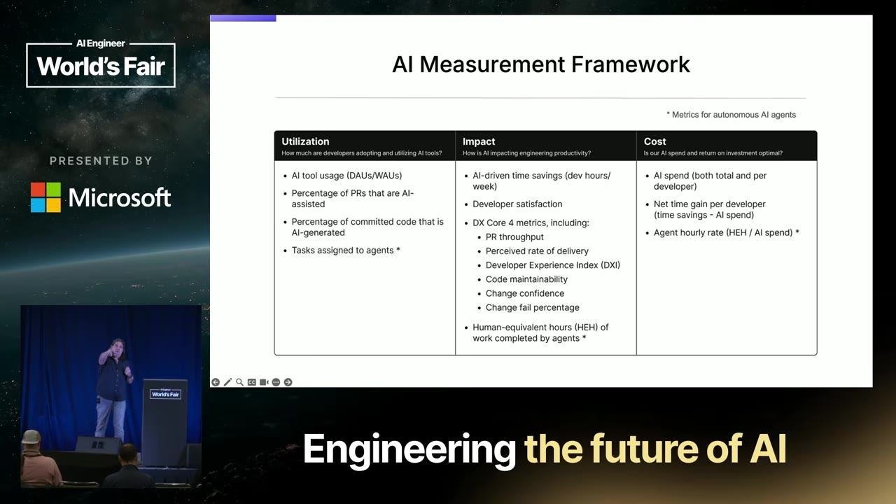

essencial do dia: Dados de cerca de 200 mil engenheiros mostram por que o ganho real de throughput ficou em 7,7% e como medir o seu.
Dados de 400 empresas sobre IA no desenvolvimento
The State of AI in Software Development: Data from 400+ Orgs
A IA acelera a escrita de código, mas o gargalo das equipes está em outro lugar, e por isso os ganhos medidos ficam bem abaixo do prometido.
Depois deste talk você consegue avaliar o efeito real da IA no seu time com métricas de uso, impacto e custo, em vez de percepção
Em 3 frases
A DX analisou cerca de 200 mil engenheiros e viu a frequência de deploy subir, mas a taxa de falha de mudanças ficou muito mais instável e a confiança em mudar código caiu.
O ganho mediano de throughput (volume entregue) de PRs foi de 7,7%, e nenhuma empresa chegou a 2x, porque gerar código ocupa só 14% a 16% do fluxo de valor.
Para medir de verdade, o talk propõe olhar uso, impacto e custo, comparar grupos de usuários nas métricas que a equipe já confia e preparar a plataforma para agentes.
Antes de ler
- Métricas DORA quatro métricas de entrega de software
- Change failure rate taxa de falha de mudanças
- Pull request pedido de integração de código analogia no glossário
- Métrica proxy indicador indireto de valor analogia no glossário
- SDLC ciclo de vida de desenvolvimento de software analogia no glossário
- Teoria das restrições uma hora ganha fora do gargalo não vale nada
Velocidade sobe, mas a percepção quase não mexe
A frequência de deploy (métrica DORA) cresce de forma constante, mesmo com variação entre regiões. Já a sensação dos engenheiros de entregar mais rápido subiu só cerca de 4,5% em um ano. O palestrante lembra o estudo da METR, com 16 engenheiros, em que a produtividade real caiu e a percepção subiu.
01:44 Deploy frequency cresce, mas a curva já começa a achatar.
Qualidade fica volátil
Cada linha do gráfico é uma empresa. Algumas aumentaram a taxa de falha de mudanças em até 2 pontos percentuais, sobre um benchmark de mercado de cerca de 4%. Isso equivale a até 50% mais defeitos em produção. O padrão já existia sem IA, mas a amplitude aumentou.
04:52 Algumas empresas pioram bastante a taxa de falha, outras melhoram.
Código mais fácil de entender, mudança mais assustadora
A manutenibilidade percebida subiu quase 4%, mas a confiança para mudar código caiu 6%. Os dois indicadores costumavam andar juntos. O palestrante liga isso ao tamanho dos PRs, que passou de cerca de 44 para 72 linhas, e à queda de 10% na sensação de entrega incremental.
 (ampliar imagem)
(ampliar imagem)
Mais 2 ideias deste talk
Medir uso, impacto e custo
O AI Measurement Framework da DX tem três dimensões. Utilização mostra quem usa e com que frequência. Impacto cruza esse uso com métricas já confiáveis, como tempo de ciclo do PR e tamanho do PR. Custo acompanha o gasto com tokens. A recomendação é comparar grupos de usuários, sem criar métricas novas.


(ampliar imagem)Gerar código nunca foi o gargalo
Mesmo com código perfeito e instantâneo, a IA atacaria só 14% a 16% do fluxo de valor. O ganho mediano medido foi de 7,7% em throughput, a média de 13%, e os melhores ficaram na faixa de 70%. Reuniões, troca de contexto e atrito no ambiente consomem o tempo economizado.
15:11 Mediana de 7,7% e nenhum caso chegando a 2x.
A DX vende plataforma de medição de produtividade, então tem interesse em mostrar que medir é difícil e necessário. Os dados vêm de clientes da própria empresa, sem grupo de controle descrito. Boa parte dos indicadores de confiança e manutenibilidade é percepção de engenheiros em pesquisa. O talk também cita um estudo de 16 pessoas para ilustrar a distância entre percepção e realidade. Os casos de Morgan Stanley, Zapier e Spotify são relatos públicos, sem método de cálculo apresentado.
Teste você mesmo
Responda de cabeça antes de abrir. Lembrar com esforço é o que fixa.
- lembrar Por que o ganho de throughput ficou bem abaixo do prometido?
Ver resposta
Gerar código ocupa só 14% a 16% do fluxo de valor. O ganho mediano de throughput de PRs foi de 7,7% e nenhuma empresa chegou a 2x.
- aplicar Que métricas você mediria antes e depois de ampliar o uso de IA no seu time?
Ver resposta
Taxa de falha de mudanças, tamanho médio dos PRs e tempo de ciclo, comparando também quem usa muito e quem usa pouco.
- criticar Que limites tem esse conjunto de dados?
Ver resposta
A DX vende medição de produtividade e os dados vêm de clientes dela, sem grupo de controle descrito. Confiança e manutenibilidade são percepções de engenheiros em pesquisa.
Antes e depois de IA com PRs reais
Você precisa de: Um repositório no GitHub e Python ou uma planilha
- Exporte os PRs mergeados dos últimos seis meses com data, linhas alteradas e tempo até o merge.
- Divida em dois períodos, antes e depois da adoção de IA na sua equipe.
- Calcule tamanho médio dos PRs, tempo de ciclo e quantidade de reverts por período.
- Anote o que mudou e o que ficou parecido.
Deu certo se: Você tem três números por período e vê se o tamanho do PR e os reverts subiram, como no estudo.
O que fazer com isso
- Meça a taxa de falha de mudanças e o tamanho médio dos PRs da sua equipe antes e depois de ampliar o uso de IA.
- Compare grupos de quem usa muito e pouco IA nas métricas que você já acompanha, como tempo de ciclo e tamanho de PR.
- Peça PRs pequenos aos agentes, para manter entrega incremental e revisão viável.
- Procure o gargalo real do seu fluxo, como reuniões, CI lenta ou revisão, antes de comprar mais ferramenta de geração de código.
Conversa com outros talks
- Software factory começando por triagem de incidentes · 7 out · em comum: Agent readiness, Métrica proxy, Métricas DORA
- O que sobra para engenheiros quando a IA programa · 25 out · em comum: Pull request, Teoria das restrições
- Custo por PR: salário e token na mesma conta · 16 out · em comum: Métrica proxy, Pull request